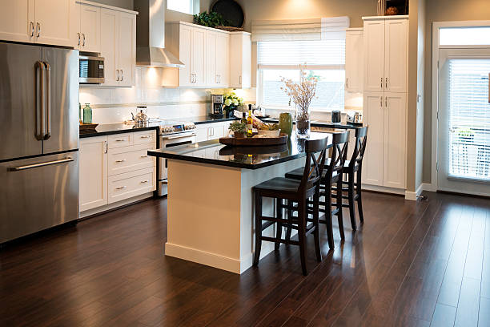
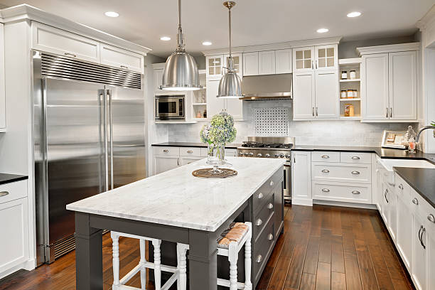

Carlinville Illinois
info@tastkitchenremodeling.xyz
Carlinville Illinois
info@tastkitchenremodeling.xyz

Top-rated kitchen remodelers in Carlinville Illinois . From modern designs to classic makeovers, we create beautiful, functional kitchens that fit your budget and style.
Click Here To Call Us (877) 848-1711Looking for top-notch kitchen remodeling services in Carlinville Illinois ? Tast Kitchen Remodeling specializes in transforming outdated kitchens into beautiful, functional spaces that reflect your style and meet your needs. Whether you're dreaming of modern upgrades, classic touches, or a complete renovation, we provide custom kitchen remodeling solutions tailored to your home in Carlinville Illinois .
We handle every aspect of your kitchen remodel, including custom cabinetry, countertops, backsplashes, flooring, and lighting. Our design professionals work closely with you to ensure that every detail aligns with your vision, from selecting the perfect materials to optimizing your kitchen layout for maximum functionality. With years of experience serving homeowners in Carlinville Illinois our commitment to quality craftsmanship and excellent customer service sets us apart.
Upgrade your kitchen with sleek quartz countertops, stylish cabinets, and energy-efficient appliances that bring both beauty and efficiency to the heart of your home. We focus on creating spaces that are not only visually stunning but also enhance your cooking and dining experience.
Ready to start your kitchen transformation in Carlinville Illinois ? Contact Tast Kitchen Remodeling today to schedule a consultation and discover why we are the preferred kitchen remodeling experts in Carlinville Illinois . Let us bring your dream kitchen to life!
Residential & commercial Kitchen Remodeling
Quality services at affordable prices
Immediate 24/ 7 emergency services


At Carlinville Illinois Kitchen Renovations, we are dedicated to transforming kitchens into stunning, functional spaces that fit your lifestyle. With years of experience and a team of skilled professionals, we offer innovative kitchen renovation ideas and handle projects of all sizes, from simple upgrades to complete remodels. Our commitment to quality craftsmanship and customer satisfaction sets us apart as the best local kitchen renovation company in Carlinville Illinois .
We focus on understanding your vision, blending style with functionality, and ensuring every detail meets your needs. Whether it's custom cabinetry, modern countertops, or smart appliances, we bring your dream kitchen to life. Our team is passionate about delivering exceptional results on time and within budget, making us the top choice in Carlinville Illinois .
Let us turn your kitchen renovation ideas into reality with professional expertise and unmatched dedication!
Residential & commercial Kitchen Remodeling
Quality services at affordable prices
Immediate 24/ 7 emergency services
Kitchen remodeling on a budget requires creativity and expertise, and that's where Kitchen Remodeling excels. We specialize in maximizing your kitchen's potential without overspending, providing strategies like refinishing existing cabinets, updating fixtures, and optimizing layout for better space utilization. Our team understands the nuances of budget constraints while maintaining quality and design aesthetics, ensuring you get the best value for your investment. It's possible to achieve a stunning kitchen transformation that fits your financial plan ; trust us to guide you through the process.

Open concept kitchens offer a modern twist on traditional home layouts, fostering connectivity and flow. At Kitchen Remodeling, we specialize in open-concept kitchen remodeling, helping you to reimagine your space for a more inviting and inclusive atmosphere. Whether you’re removing walls or redesigning your layout, our team in Carlinville Illinois is skilled at creating a harmonious space where cooking, dining, and entertaining converge. We focus on ensuring that the design balances privacy, functionality, and aesthetics, creating a seamless transition throughout your home.

Our kitchen renovation services in Carlinville Illinois encompass everything from minor updates to complete transformations. We take a comprehensive approach, evaluating your current kitchen layout, functionality, and aesthetics to design tailored solutions that meet your goals. Our process involves collaboration with you throughout every step, ensuring your vision is translated accurately into the final outcome. From design choices to skilled execution, we prioritize customer satisfaction and quality in every project. When you choose us for your kitchen renovation, you can trust that we’ll bring both creativity and craftsmanship to your space.

Your home deserves a kitchen that reflects your lifestyle and taste. Our residential kitchen remodeling services provide tailored renovations designed for homeowners looking to enhance their culinary space. Our dedicated team works hard to understand your unique needs and preferences, translating them into beautiful and functional designs.
We pride ourselves on using high-quality materials, fostering a collaborative atmosphere, and delivering exceptional craftsmanship. Whether it’s a minor update or a complete renovation, our residential kitchen remodeling services will transform your space into the kitchen of your dreams.

If you’re looking to completely overhaul your kitchen, our full kitchen remodel services in Carlinville Illinois are the perfect solution. We specialize in comprehensive renovations that involve everything from structural changes and layout redesigns to new cabinetry and appliances.
Our design experts will work closely with you to craft a vision for your kitchen that combines style and practicality. We manage every step of the remodeling process with precision and care, allowing you to focus on your day-to-day life while we turn your dream kitchen into reality. For a full kitchen remodel that exceeds your expectations, choose us in Carlinville Illinois .
When it comes to kitchen remodeling, choosing a local company has its advantages. Our company is among the premier local kitchen remodeling companies and we pride ourselves on our strong community presence and understanding of local tastes and trends. Our team of experts works closely with homeowners in Carlinville Illinois providing tailored solutions and unbeatable customer service. We are committed to transparency, communication, and quality, ensuring that your remodeling experience is enjoyable and rewarding.

Embracing sustainability in your home is more important than ever, and our eco-friendly kitchen remodeling services in Carlinville Illinois focus on creating beautiful spaces that are kind to the planet. We utilize sustainable materials, energy-efficient appliances, and environmentally friendly practices to design kitchens that are both stylish and sustainable. Our knowledgeable team helps you make informed choices that contribute to a healthier environment while enhancing your home’s aesthetic appeal. Choose us for your eco-friendly kitchen remodel and join us in making a positive impact on our planet.

A well-thought-out kitchen layout can enhance efficiency and flow in your space. Our kitchen layout design services focus on optimizing every inch to create a functional and harmonious environment. Our team of skilled designers will analyze your cooking habits and lifestyle needs to create a layout that maximizes space utilization and improves accessibility. Whether you’re looking to create a chef’s paradise or a cozy family gathering spot, we ensure that your kitchen layout supports your ideal cooking experience. Choose us for innovative designs that elevate both function and form in your kitchen.
Years Experience
Expert Technicians
Satisfied Clients
Compleate Projects
At Tast Kitchen Remodeling, we recognize that your kitchen is the heart of your home. Serving Carlinville Illinois with top-notch remodeling services, we are dedicated to transforming your kitchen into a beautiful and functional space that mirrors your personal style. Our experienced team blends innovative design with superior craftsmanship to deliver exceptional results tailored to your needs.
Our talented designers collaborate with you to craft a custom kitchen that suits your taste and lifestyle. Whether you prefer sleek modern upgrades or classic renovations, we meticulously plan and execute every detail. Using only the highest-quality materials, our skilled craftsmen ensure that your kitchen not only looks stunning but also stands the test of time.
We believe in offering a personalized experience for every client. By listening to your vision and providing expert advice, we bring your ideas to life. Our dedicated project managers keep you informed throughout the remodeling process, ensuring that your project remains on schedule and within budget.
With years of experience serving the Carlinville Illinois area, we understand the unique needs and preferences of local homeowners. Our deep knowledge of local trends and regulations enables us to deliver remodeling solutions that are both stylish and compliant.
We take immense pride in our work, and our commitment to quality is evident in the exceptional kitchens we create. Whether you're seeking a space upgrade or a complete renovation, Tast Kitchen Remodeling is your trusted partner in Carlinville Illinois . Contact us today to begin your kitchen transformation and see why we are the preferred choice for kitchen remodeling in Carlinville Illinois .
Are you dreaming of a kitchen that combines functionality and style right in Carlinville Illinois ? Our team of expert remodelers is ready to turn that dream into reality. With extensive experience in the kitchen remodeling industry, we understand that your kitchen is the heart of your home. We are dedicated to providing you with personalized service, ensuring that every element—from cabinetry to countertops—is catered to your unique needs. Our local presence not only assures you of quick and efficient service but also a team that genuinely understands the design trends and requirements specific to Carlinville Illinois .
Our commitment to top-quality materials ensures longevity and durability, while our innovative designs maintain a focus on modern aesthetics. By placing the customer at the forefront of our business, we have built a reputation as the prime choice for kitchen remodeling near me . Count on us for transparent pricing and a detailed process that includes your input every step of the way.
Finding affordable kitchen remodeling without compromising on quality is a challenge many homeowners face. Our company in Carlinville Illinois prides itself on providing top-notch services tailored to fit your budget. We believe that a beautiful kitchen should not come with an exorbitant price tag. Our team will work with you to create a cost-effective plan that still delivers stunning results. By leveraging our extensive network of suppliers and contractors, we help you save money while achieving the kitchen of your dreams.
Your kitchen should reflect your personality and lifestyle. Our custom kitchen remodeling services focus on creating a space that is uniquely yours. We start by collaborating with you to comprehend your vision – the layout, the materials, the colors, and the functionality that you desire. As experienced designers and craftsmen, we bring your ideas to life, ensuring every detail aligns with your preferences. With our team at your side, you can expect a seamless process that is as enjoyable as the final reveal. Choose us for custom solutions that encapsulate your vision and cater to your day-to-day needs.
The design of your kitchen is pivotal in creating a harmonious space that serves as the heart of your home. At Kitchen Remodeling, our kitchen design and remodeling services focus on functionality and aesthetics. We employ the latest design trends, cutting-edge technology, and natural lighting techniques to craft the ideal kitchen for you. Our experts in Carlinville Illinois keep the principles of ergonomic design in mind, ensuring that you have an efficient workspace. Whether you prefer a rustic charm or sleek modernity, we blend personal style with objective usability for a kitchen that excites your senses and simplifies your life.
Limited space doesn’t have to limit your culinary aspirations. Our small kitchen remodeling ideas are perfect for maximizing every inch while ensuring your kitchen remains stylish and functional. We offer innovative storage solutions, light color palettes, and open shelving concepts to create an illusion of space. Our team specializes in space-saving designs that cleverly utilize every nook and cranny without sacrificing quality or style. Trust us to transform your compact kitchen into a delightful, efficient cooking environment that inspires you daily.
When it comes to kitchen renovations, you need experienced contractors who can deliver results on time and within budget. As trusted kitchen renovation contractors in Carlinville Illinois Kitchen Remodeling stands out for our professionalism, quality craftsmanship, and integrity. We communicate transparently throughout the renovation process, keeping you informed from start to finish. Our remodeling team manages every aspect of your project, ensuring accuracy and attention to detail in every installation. Whether you're considering a full renovation or specific updates, our skilled contractors are here to bring your vision to life seamlessly.
If you dream of a sleek, modern kitchen design, our modern kitchen remodeling services are perfect for you. We keep up with the latest trends and innovations in kitchen design, focusing on minimalist aesthetics, smart technology, and sustainable materials. Our skilled team understands the nuances of modern architecture and interior design, enabling us to deliver a kitchen that combines form and function seamlessly. Trust us to create a sophisticated space that reflects contemporary trends while catering to your family's needs.
Perfect cabinets can be a game changer for any kitchen. Our kitchen cabinet installation services focus on quality, precision, and custom solutions tailored to your style. Whether you’re looking to upgrade your current cabinets or start fresh, our expert team will help you choose the perfect materials, finishes, and styles that fit your kitchen's overall look. With our meticulous installation techniques, you can be assured of durable, functional cabinetry that enhances your space. Choosing us means benefiting from work done by highly trained professionals dedicated to achieving your vision.
If you’re seeking a truly extraordinary kitchen experience, our luxury kitchen remodeling services in Carlinville Illinois are the perfect choice. We specialize in crafting opulent kitchens equipped with top-tier appliances, elegant finishes, and exquisite details that reflect your taste and lifestyle.
Our design team partners with you to understand your vision, making your kitchen a statement piece of luxury and sophistication. We implement bespoke cabinetry, high-end fixtures, and premium materials to create a space that is both functional and lavish. For those who desire the best, our luxury kitchen remodeling services ensure that your kitchen becomes an oasis of comfort and style. Trust us to deliver the pinnacle of luxury in every project we undertake .
The right countertop can define your kitchen's character. Our kitchen countertop installation services focus on quality, beauty, and durability. Offering a wide selection of materials—from granite and quartz to marble and laminate—we help you choose the perfect countertop that fits your aesthetic and functional needs. Our professional installation guarantees precise cuts, perfect fits, and flawless finishes. Our commitment to using top-quality materials means you can trust your new countertops will stand up to the rigors of daily use while adding beauty and value to your home.
Adding a kitchen island can transform your cooking space, and our kitchen island installation services expertly guide you through the process. Whether you need additional prep space, storage, or seating, our custom solutions can help you achieve your kitchen goals. We understand the importance of ensuring that the island complements your existing layout and decor, and we work diligently to fuse functionality with style. Let us help you create a focal point in your kitchen that enhances both usability and aesthetic appeal.
When searching for the best kitchen remodeling companies look no further. We pride ourselves on being industry leaders dedicated to transforming kitchens with quality craftsmanship, innovative designs, and excellent customer service. Our reputation has been built on our clients' satisfaction and the stunning results of our remodels.
We handle projects of all sizes and complexities, from small renovations to complete kitchen overhauls. Our team of expert designers and remodelers ensures personalized attention from start to finish. We focus on clear communication, transparency in pricing, and meeting your timeline, making us the top choice for kitchen remodeling needs .
Understanding the costs involved in a kitchen remodel is crucial for effective planning. At Kitchen Remodeling, we provide comprehensive kitchen remodel cost estimates that are transparent and detailed. Our team will assess your space, discuss your desired updates, and provide an accurate estimate that covers materials, labor, and potential unforeseen charges. Based in Carlinville Illinois we prioritize honesty in our financial dealings, ensuring that you’re fully prepared for your kitchen project. With our thorough cost documentation, you can make informed decisions that align with your budget and expectations.
The right flooring can dramatically affect the look and feel of a kitchen. Our kitchen flooring installation services offer a variety of materials, including hardwood, tile, laminate, and vinyl, all professionally installed to ensure durability and style. We understand the importance of selecting flooring that can withstand heavy traffic while enhancing the overall aesthetic. Our experienced team will work with you to choose the perfect flooring option that fits both your needs and your budget, ensuring a seamless installation process from start to finish.
Effective kitchen lighting is essential for both functionality and ambiance. Our kitchen lighting installation services in Carlinville Illinois focus on creating well-lit, inviting spaces that complement your design while enhancing usability. Whether you need task, accent, or ambient lighting, our team will help you select the right fixtures and placements that blend form and function. With our expertise, we ensure that your kitchen is perfectly illuminated for cooking, entertaining, and everything in between. Choose us for innovative lighting solutions that brighten your space in more ways than one.
A backsplash is not only functional but also adds a decorative touch to your kitchen. Our kitchen backsplash installation services offer a range of materials, including tile, glass, and stone, allowing you to select a style that suits your taste. We are committed to perfect execution, ensuring that your backsplash is installed seamlessly and enhances your kitchen's aesthetics.
Our skilled installers pay careful attention to detail, ensuring that all tiles are aligned perfectly and that the grout work is pristine. Whether you're looking for a bold statement piece or a subtle, elegant touch, our kitchen backsplash installation will beautifully finish your kitchen remodel. Trust us to deliver exceptional results you will love.
Upgrading your kitchen appliances can significantly boost functionality and efficiency. At Kitchen Remodeling, we provide expert kitchen appliance installation services tailored to fit your specific models and kitchen layout. We handle everything from the delivery to the final setup, ensuring all appliances, including refrigerators, ovens, and dishwashers, are installed correctly for optimal performance in your Carlinville Illinois home. Our team ensures that your appliances are fully functional and integrated seamlessly into your kitchen design, alleviating the stress often associated with new appliance purchases.
Welcome to Stylish & Luxurious Outdoor Kitchens, where we transform your outdoor space into a culinary oasis. Located in the heart of Carlinville Illinois we pride ourselves on being the premier choice for outdoor kitchen design and installation. Our mission is to create stunning outdoor environments that blend elegance with functionality, allowing you to entertain, relax, and enjoy the great outdoors in style.
With years of experience in the industry, our skilled team of designers and craftsmen works closely with you to bring your vision to life. We understand that every homeowner has unique tastes and needs, which is why we offer a wide range of customizable options, from state-of-the-art grills and appliances to beautiful countertops and cabinetry.
At Stylish & Luxurious Outdoor Kitchens, we prioritize quality and attention to detail. We use only the finest materials, ensuring that your outdoor kitchen is not only beautiful but also built to withstand the elements. Our commitment to excellence has earned us a reputation as the best local company in Carlinville Illinois .
Whether you're hosting a summer barbecue or enjoying a quiet evening under the stars, our outdoor kitchens enhance your lifestyle and add value to your home. Choose Stylish & Luxurious Outdoor Kitchens for a seamless blend of luxury and practicality. Let us help you create the outdoor space of your dreams, tailored to your unique style. Contact us today to get started!
It is the home of Blackburn College, a small college affiliated with the Presbyterian church. The city is the former home of Prairie Farms Dairy.
Granite, quartz, and marble are popular choices for durability and style in Carlinville Illinois .
Yes, we offer custom backsplash design and installation as part of our kitchen remodeling services .
We’ll work with you to create a budget that meets your needs and provides a clear outline of costs for your remodel .
Yes, we can update your kitchen’s plumbing as part of your remodeling project .
Yes, we offer a variety of countertop materials, including granite, quartz, and marble, .
Yes, we offer free consultations to help you plan your kitchen remodel .
Yes, we specialize in creating open-concept kitchen layouts that enhance flow and space .
Yes, we specialize in custom cabinetry to fit your style and storage needs .
Yes, we offer a variety of flooring options, including tile, hardwood, and laminate, for your kitchen remodel in Carlinville Illinois .
Yes, we offer affordable options and work within your budget to create the kitchen you want .
The first step is to schedule a consultation with Tast Kitchen Remodeling to discuss your ideas and budget in Carlinville Illinois .
Yes, we have experience working with older homes and updating kitchens while preserving the home’s character .
The cost depends on the scope of the project, but we provide free estimates for all kitchen remodeling in Carlinville Illinois .
Yes, we provide eco-friendly materials and energy-efficient appliances for sustainable kitchen remodels .
Yes, we offer professional design services to help you create your dream kitchen .
Yes, we specialize in remodeling kitchens of all sizes, including small kitchen renovations in Carlinville Illinois .
Yes, we are fully licensed and insured to handle kitchen remodeling projects .
Yes, we provide lighting solutions, including under-cabinet lighting and pendant lights, to enhance your kitchen’s atmosphere in Carlinville Illinois .
We provide tips and advice for maintaining your new kitchen, including cleaning and upkeep recommendations .
We offer full kitchen remodeling services, including design, cabinetry, countertops, lighting, and more .
We offer modern, traditional, farmhouse, and custom kitchen designs to suit your style in Carlinville Illinois .
Yes, we can design and install kitchen islands to add storage, seating, and workspace in Carlinville Illinois .
Yes, we can remove walls and reconfigure the layout to create a more open kitchen design in Carlinville Illinois .
Yes, we can install new appliances as part of your kitchen remodeling project in Carlinville Illinois .
Some remodels require permits, and Tast Kitchen Remodeling will handle all necessary permits for your project .
The timeline varies by project, but most kitchen remodels take 4-8 weeks in Carlinville Illinois .
Our design team will help you choose the best materials based on your style, functionality, and budget .
Yes, we offer warranties on our workmanship and materials for your peace of mind .
We work with your schedule to complete your remodel on time, based on the scope of the project .
We specialize in custom cabinetry and innovative storage solutions to maximize space in your kitchen .
Tast Kitchen Remodeling did an incredible job transforming our kitchen in Carlinville Illinois . Their attention to detail and craftsmanship exceeded our expectations. We couldn't be happier with the modern design and functionality they provided. Highly recommend their services! – Emily R.
Profession
We are so pleased with our kitchen remodel by Tast Kitchen Remodeling in Carlinville Illinois . They exceeded our expectations with their design and execution. The process was smooth, and the end result is a kitchen we absolutely love. Highly recommend their services! – David P.
Profession
Tast Kitchen Remodeling provided outstanding service for our kitchen renovation in Carlinville Illinois . The team was professional and skilled, and the quality of their work is superb. Our kitchen has been transformed into a beautiful space, and we highly recommend their services. – Lucas N.
Profession
Carlinville IL Kitchen Remodeling Pros
(877) 848-1711
info@tastkitchenremodeling.xyz
09.00 AM - 09.00 PM
09.00 AM - 12.00 PM